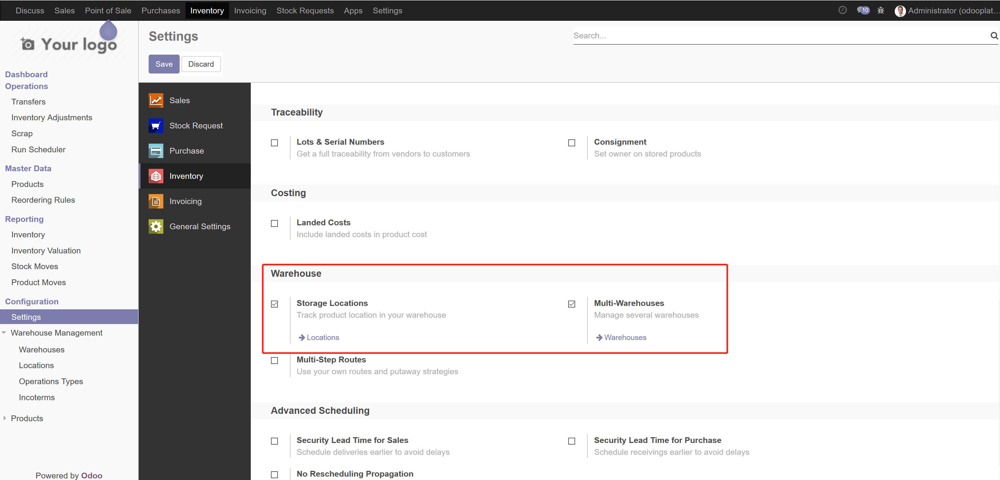
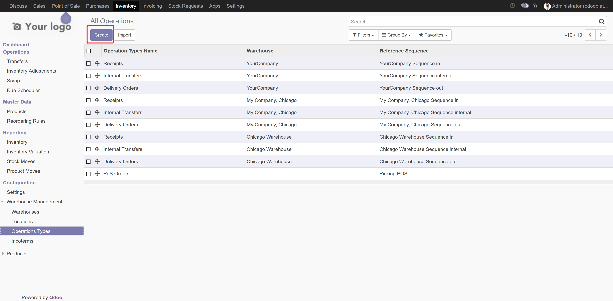

For retail companies, when your business model for purchasing is that points of sale send purchase requests to HQ.
HQ will perform centralized purchase with suppliers then suppliers directly deliver products to the corresponding points of sale.
Similarly, if your company has multiple branches and branches send purchase requests to HQ......This module can also apply to this kind of situation.
KEY FUTURES
Adding a picking type field on purchase order line model.The original odoo function creates one receive picking per purchase order and one move per purchase order line according to the picking type of the purchase order.
With our module, a purchase order generates moves and pickings according to the picking type of purchase lines( if there isn't any picking type for a line, still use the picking type of the order)
, and moves of lines with same picking type, will eventually merge into one picking.
Print purchase orders' aggregate delivery information by a button added in the menu. The printed document will have shipping address, contact, phone number and product details of each picking.
How to use
Create PO, choose correct operation type for lines that you what to apply precise operation
types. Then confirm PO.

PO then will go into "Purchase Order" state.
Pickings are generated according to the operation type of PO lines. if there is no operation
type for a line, the line will use the picking type of the PO instead, which is the original
odoo function.

NOTE:We offers 30 days online
support from the date of purchase for all of our products.